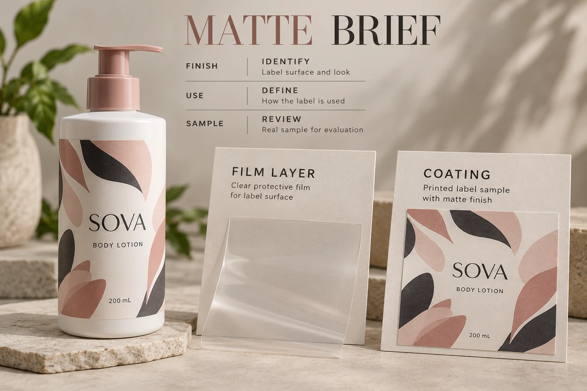

Name the layer instead of repeating the appearance
Ask the printer whether the proposal uses a matte overlaminating film, an overprint varnish or another construction. Obtain the relevant reference for the base stock, print and finish together. If the quotation uses an internal shorthand, have its meaning recorded.
ACTEGA's pressure-sensitive label example identifies matte and gloss overprint varnishes within a particular print construction. It illustrates a coating route. It does not establish a resistance level for every product called matte varnish.
Avery Dennison's overlaminate overview describes clear pressure-sensitive films with different finish options. Its examples concern graphics applications, including signage and vehicles. Those durability claims should not become a cosmetic-label specification. The useful distinction here is a film layer versus an identified coating.
Describe what the finished pack must encounter
Write down the relevant handling: dry shelf display, repeated handling, contact with water or the actual cosmetic product, packing and transportation. Include the bottle surface and whether the container flexes during use.
Ask the production supplier which sample and evaluation are appropriate for those conditions. Do not assume that a visually similar matte finish has the same compatibility with the print beneath it. Equally, do not declare every laminate superior to every varnish without identifying the constructions and requirements.
The waterproof material guide covers the broader stock discussion. A finish decision concerns the proposed printed construction; it does not replace adhesive selection or approval of the bottle surface.
Compare the appearance on a relevant sample
Use the intended artwork, or identify differences when the supplied sample comes from another design. View the samples under consistent conditions and on the relevant container where practical. Note whether the differences concern reflection, color impression, texture or fine detail.
A soft-looking photograph cannot establish a tactile property. A description such as soft touch also needs its own defined product reference; it should not be treated as a synonym for every matte film or coating.
Keep an accepted sample ID with the artwork. If the printer substitutes the finish later, ask which approvals need reviewing. A shared matte description does not establish that the pack remains visually or functionally equivalent.
Our cosmetic color proofing guide explains why the stock, finish, container and viewing conditions belong in the appearance discussion. Use that reference alongside the finish specification rather than asking a screen proof to settle the physical surface.
Keep later batch coding in the conversation
If another party adds a batch code or date after label production, identify the coding method and surface requirements before choosing the final protection. Ask the operator and supplier to review the actual combination.
Avoid both blanket claims: that a laminate can never accept later printing, or that any matte varnish is automatically printable. The relevant finish, coding technology and consumable need confirming. An empty rectangle on the artwork does not establish that ink will adhere there.
Use the separate batch-code panel guide for that operator handoff. This article chooses the finish construction; the coding review establishes how the later mark will be produced on it.

Give the two proposals the same review questions
Use a short comparison record before deciding which quotation meets the brief:
| Field | What to record for each proposal |
|---|---|
| Finish identity | Film or coating, named reference and relevant specification |
| Base construction | Stock, print system and other layers included |
| Appearance | Accepted sample ID, artwork differences and viewing conditions |
| Handling | Intended contacts and the agreed sample evaluation |
| Later operations | Coding, application or other receiving-party requirements |
| Commercial scope | Quantities by design, sample scope, preparation and delivery format |
| Release | Reviewer, accepted conditions and unresolved difference |
Ask the supplier to explain a necessary difference instead of hiding it to make the prices look comparable. Where an important input is unknown, resolve it with the responsible operator or brand reviewer. A cheaper quote for a different outcome is a different proposal.
There is no universal thickness, rub score, turnaround time or cost difference in this worksheet. Those values need an actual product specification, agreed evaluation or written offer.
Allow either route to win under the right conditions
Consider a hypothetical dry presentation pack with an accepted coated sample and no unresolved handling requirement. A suitable coating proposal may meet the objective without adding a film layer simply for its name.
Now consider a regularly handled bottle for which a specific laminated construction has the required appearance and relevant evaluation evidence. The buyer has a reason to compare that proposal seriously. The reason is the identified result under the intended conditions, not a universal rule that laminate is always premium.
If neither sample represents the required use, the next decision is which focused sample to obtain. Ordering the full run does not remove the uncertainty.
Send the finish question with the job details
For custom cosmetic bottle labels, provide container details, artwork, label size and quantity per design. Include the finish reference, intended handling, any later coding process and the particular comparison the brand needs to resolve.
Use the inquiry form to prepare a message, then send artwork and sample photographs by email or WhatsApp. The form does not upload attachments. Ask for an identified construction and sample scope so the word matte has a purchasing meaning everyone can use.